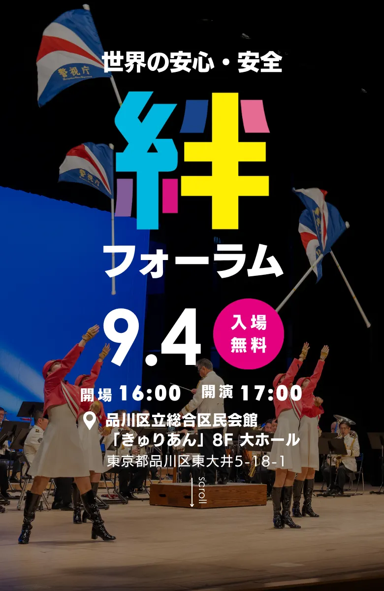

警察庁 人身安全・少年課 課長 重成 浩司 氏による特別講演や、SNSやインターネット上で起こりうるトラブルを寸劇形式で紹介。子どもたちが安全にネットを使いこなすための「ネットリテラシー」を学びます。
音楽に合わせて体を動かし、親子で楽しみながら参加できるプログラムです。
昭和23年の発足以来、都民と警察を結ぶ「音の架け橋」として活動してきた警視庁音楽隊が登場し、カラーガード「MEC」によるフラッグ演技とともに、子どもも大人も楽しめるステージをお届けします。
往復はがきに下記の内容をご記入のうえ、お申込みください。
※お申込みは最大3名様までとさせていただきます。
※申込多数の場合は先着順とし、定員に達し次第受付を終了いたします。
入場無料です。どなたでもご参加いただけます。
はい、事前申込制です。WEB（健安協ホームページ）または往復はがきでお申込みください。
お申込みは最大3名様までです（同伴者様2名まで）。
往復はがきは8/20(木)消印有効です。申込多数の場合は先着順とし、定員に達し次第受付を終了いたします。
親子で学べる講座や劇、警視庁音楽隊によるコンサートなど、小さなお子様も飽きずに楽しめる内容です。
一般社団法人 健康で安心な社会づくり推進協議会（略称：健安協）は、健康で安心して暮らせる社会づくりを目指し、警察関係者、行政、民間企業などと連携しながら、安心・安全に関する啓発活動や交流事業に取り組む団体です。本フォーラムの開催に加え、警察音楽隊による交流事業も展開しており、2026年11月15日（日）、16日（月）には、国内外の警察音楽隊が集う「世界のお巡りさんコンサート2026 in TOKYO」の開催を予定しています。